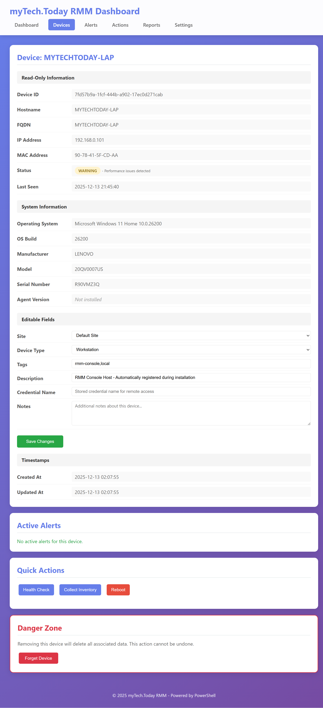

🖥️ myTech.Today RMM (Remote Monitoring and Management)
A comprehensive, production-ready, enterprise-capable PowerShell-based RMM solution for Windows, MacOS, and Linux environments.
Overview
Version: 2.1
MIT License
Author: Kyle C. Rode (myTech.Today)
Initial Scale: 150 endpoints
Maximum Scale: 10,000+ endpoints
Feature Coverage: ~70% of commercial RMM capabilities
Key Features
Device Management
- Add Device with Real-Time Validation - Hostname resolution with ALL CAPS and right-justified display when valid; IP ping validation with right-justified display when reachable; auto-detect device type
- Inline Site Creation - Add new sites directly from the Add Device dialog with real-time dropdown updates
- Device Pairing System - Generate 6-character alphanumeric codes with 10-minute countdown timer for client onboarding
- Forget Device - Remove devices from the database via the device detail page with confirmation
- Status Descriptions - Non-OK statuses display short descriptions of the main issue
Device Detail Page
The device detail page displays comprehensive information with appropriate editability:
Read-Only Fields:
- Device ID, Hostname, FQDN, IP Address, MAC Address
- Status (with issue description for non-OK statuses)
- Last Seen timestamp
- Operating System, OS Build, Manufacturer, Model, Serial Number
- Agent Version, Created At, Updated At
Editable Fields:
- Site (dropdown selection)
- Device Type (Workstation, Server, Laptop, VM, Network Device, Mobile, Other)
- Tags (comma-separated)
- Description
- Credential Name (for stored remote access credentials)
- Notes (multi-line)
Quick Actions:
- Health Check, Collect Inventory, Reboot buttons
- Forget Device (danger zone)

Remote Actions
- Dropdown Device Selection - Execute actions via dropdown list showing all devices with status indicators
- Action Categories - Diagnostics, Maintenance, Updates, Power, Network
- Action Queue - All actions are queued with status tracking
Web Dashboard
- Fleet Overview - Real-time status of all devices with online/offline counts
- Alert Dashboard - View and manage active alerts with severity indicators
- Settings Page - View configuration, restart dashboard, and access uninstall options
- Responsive Design - Works on desktop and tablet browsers
Core Capabilities
- Asset Inventory - Comprehensive hardware and software auditing
- Health Monitoring - Real-time system health checks and alerting
- Update Management - Windows Update management via WinGet
- Automated Remediation - Policy-based automated fixes
- Executive Dashboards - Web-based and CLI reporting interfaces
- Multi-Site Support - Manage endpoints across multiple locations
- Compliance Reporting - Track security and compliance status
- Import/Export - Import and export device lists in CSV, JSON, XLS, and XLSX formats
- Cross-Platform - Full server on Windows, MacOS, and Linux; lightweight client agent for managed devices
Workgroup & Non-Domain Support
The RMM module automatically handles connections to workgroup (non-domain-joined) computers:
- HTTPS Preference - Automatically uses HTTPS (port 5986) when available for secure workgroup connections
- Automatic TrustedHosts - Safely manages TrustedHosts entries for HTTP fallback (adds narrowly, not wildcards)
- Environment Detection - Detects domain vs workgroup scenarios and selects appropriate authentication
- Temporary Cleanup - Tracks temporary TrustedHosts additions for optional cleanup after sessions
# Check connection requirements for a workgroup target
Test-RMMRemoteEnvironment -ComputerName "WORKGROUP-PC"
# Create a session with automatic transport selection
$session = New-RMMRemoteSession -ComputerName "WORKGROUP-PC" -Credential $cred
# Require HTTPS for sensitive operations
$session = New-RMMRemoteSession -ComputerName "WORKGROUP-PC" -Credential $cred -RequireHTTPS
# Clean up temporary TrustedHosts entries
Clear-RMMTemporaryTrustedHosts
Quick Start
Prerequisites
- PowerShell 5.1+ (PowerShell 7.4+ recommended for best performance)
- Windows 10/11, Windows Server 2016+, MacOS, or Linux
- Administrator privileges for initial setup (recommended for Start Menu shortcut)
- WinRM enabled on managed Windows endpoints
Installation
Windows (One Command)
# Clone and install
git clone https://github.com/mytech-today-now/RMM.git
cd RMM
.\Install.ps1
MacOS
git clone https://github.com/mytech-today-now/RMM.git
cd RMM
chmod +x install-macos.sh
./install-macos.sh
Linux (Ubuntu, Debian, CentOS, RHEL, Fedora)
git clone https://github.com/mytech-today-now/RMM.git
cd RMM
chmod +x install-linux.sh
./install-linux.sh
The automated installer:
- Installs PowerShell Core (if not present on MacOS/Linux)
- Installs required PowerShell modules (PSSQLite, ImportExcel, PSWriteHTML)
- Copies RMM to
~/myTech.Today/RMM/ (or %USERPROFILE%\myTech.Today\RMM\ on Windows)
- Initializes the SQLite database
- Creates configuration files
- Registers the RMM PowerShell module
- Creates Desktop and Start Menu shortcuts (Windows only)
Client-Only Installation (Managed Devices)
For devices that will be managed by an RMM server (not running the server themselves):
MacOS Client
chmod +x install-client-macos.sh
./install-client-macos.sh
# Or with auto-registration:
./install-client-macos.sh --server http://YOUR_SERVER:8080 --code ABC123
Linux Client
chmod +x install-client-linux.sh
./install-client-linux.sh
# Or with auto-registration:
./install-client-linux.sh --server http://YOUR_SERVER:8080 --code ABC123
Windows Client
# Run the client agent directly
.\scripts\core\RMM-Client.ps1 -ServerUrl "http://YOUR_SERVER:8080" -PairingCode "ABC123"
# Or interactively
.\scripts\core\RMM-Client.ps1 -Interactive
After Installation
# Use the RMM module from anywhere
Import-Module RMM
Initialize-RMM
Get-RMMDevice
# Launch the Web Dashboard
& "$(Get-RMMInstallPath)\scripts\ui\Start-WebDashboard.ps1" -OpenBrowser
Or simply double-click the Desktop shortcut or find "myTech.Today RMM Dashboard" in the Start Menu.
Uninstall
Multiple uninstall options are available:
# Option 1: Dedicated uninstall script (recommended)
.\Uninstall.ps1
# Option 2: Complete removal including all data
.\Uninstall.ps1 -RemoveData
# Option 3: Via the installer
.\Install.ps1 -Uninstall
# Option 4: Via PowerShell module
Import-Module RMM
Initialize-RMM -Mode Uninstall
You can also access uninstall instructions from the Settings page in the Web Dashboard.
All uninstall methods preserve your data, logs, and configuration by default. Use -RemoveData for complete removal.
Installation Paths
After installation, files are located at:
| Component | Location |
|---|
| RMM Scripts | %USERPROFILE%\myTech.Today\RMM\ |
| Database | %USERPROFILE%\myTech.Today\RMM\data\devices.db |
| Configuration | %USERPROFILE%\myTech.Today\RMM\config\ |
| Logs | %USERPROFILE%\myTech.Today\RMM\logs\ |
| PowerShell Module | Documents\WindowsPowerShell\Modules\RMM\ |
| Desktop Shortcut | Desktop\mTT RMM Dashboard.lnk |
| Start Menu | Start Menu\Programs\myTech.Today\mTT RMM Dashboard.lnk |
Configuration
Settings (config/settings.json)
The main configuration file controls all aspects of the RMM system:
- General - Organization name, default site, data retention
- Connections - WinRM settings, timeouts, concurrency
- Monitoring - Collection intervals, metrics retention
- Notifications - Email, Slack, Teams, PagerDuty integration
- Security - HTTPS, credential caching, audit logging
- Database - Path, backups, connection pooling
- Performance - Caching, parallel jobs, batch sizes
- UI - Web dashboard port, refresh intervals, themes
Thresholds (config/thresholds.json)
Define alert thresholds for:
- CPU, Memory, Disk usage
- Network utilization
- Service availability
- Event log errors
- Windows Updates
- Certificate expiration
- Backup age
Device Pairing Workflow
The RMM system uses a secure pairing workflow to onboard new devices:
Administrator Steps
- Open the Web Dashboard and navigate to Sites & Devices
- Click + Add Device to open the Add Device modal
- Click Generate Code to create a 6-character pairing code
- Share the code and server URL with the device user
- The code is valid for 10 minutes (countdown timer displayed)
Client Device Steps
- Download and run the appropriate client installer:
- MacOS:
./install-client-macos.sh
- Linux:
./install-client-linux.sh
- Windows: Run
RMM-Client.ps1
- Enter the server URL (e.g.,
http://192.168.1.100:8080)
- Enter the 6-character pairing code
- The device is automatically registered with detected information
Auto-Detection
When a device registers via pairing code, the system automatically detects:
- Hostname (displayed in uppercase)
- IP Address
- Operating System (name and version)
- Device Type (Workstation, Laptop, Server, Virtual)
- Manufacturer and Model
- Serial Number
Architecture
Hybrid Pull/Push Model
- Pull: Central console pulls inventory and metrics from endpoints
- Push: Central console pushes actions and scripts to endpoints
Tiered Storage
- In-Memory - Active device cache for fast access
- JSON Cache - Hot data for quick retrieval
- SQLite - Persistent storage for all data
- Archive - Historical data compression
Database Schema
8 core tables:
- Devices - Endpoint inventory
- Sites - Multi-site management
- DeviceGroups - Logical grouping
- Inventory - Hardware/software data
- Alerts - Alert tracking
- Actions - Remote action queue
- Metrics - Performance data
- AuditLog - Security audit trail
Development Status
- Phase 1: Foundation & Project Setup
- Phase 2: Core Framework Implementation
- Phase 3: Data Collection System
- Phase 4: Actions & Alerting
- Phase 5: Reporting & Automation
- Phase 6: User Interfaces
- Phase 7: Scalability & Security
- Phase 8: Testing & Documentation
Contributing
This is a myTech.Today project. Contributions are welcome! Please follow the coding standards in .augment/core-guidelines.md.
Support
For issues, questions, or feature requests, please open an issue on GitHub.
License
MIT License - See LICENSE file for details.